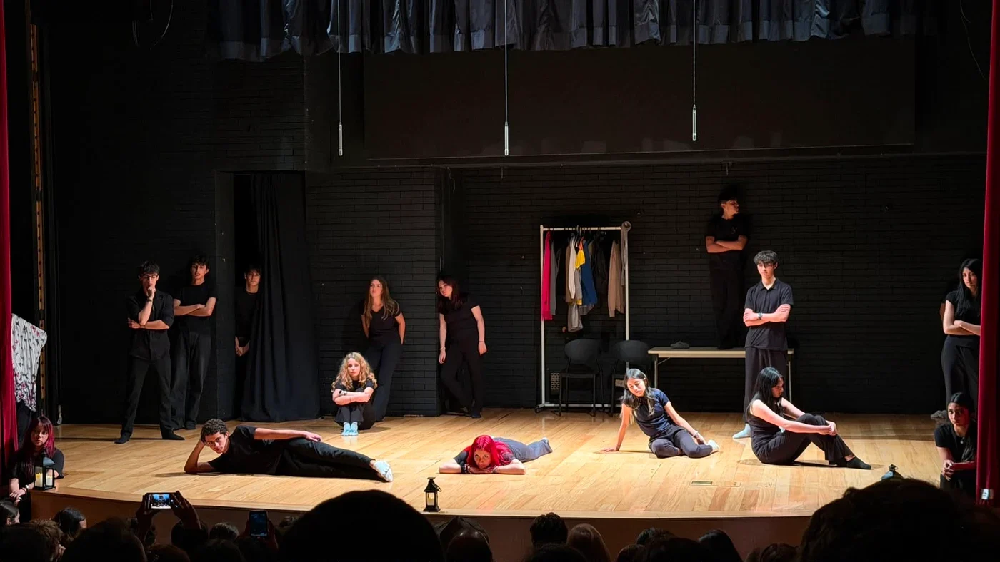

Où sont
les enfants ?
Adaptación y montaje

Adaptación de escenas de obras de Joël Pommerat con estudiantes de la opción de teatro de Seconde del Liceo Francés Louis Pasteur.
Textos de Joël Pommerat.Puesta en escena: Daniel Francisco Villamizar Díaz y Justine Fouraux.
El texto se vuelve encuentro.
Où sont les enfants ? reúne escenas de obras de Joël Pommerat en una adaptación y montaje en francés. Los estudiantes de la opción de teatro de Seconde del Liceo Francés Louis Pasteur exploran las relaciones, las acciones y las preguntas que proponen sus textos.
El ensayo permite explorar el sentido de las palabras desde las acciones, las relaciones y la presencia. La escena nace de un proceso de formación y creación compartida.